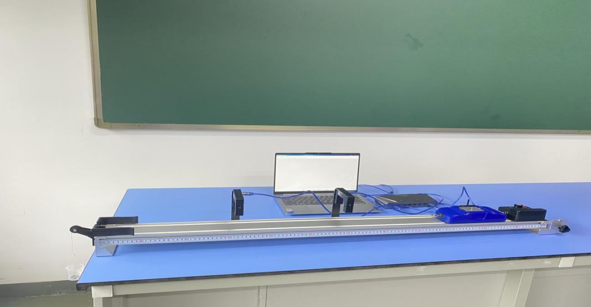
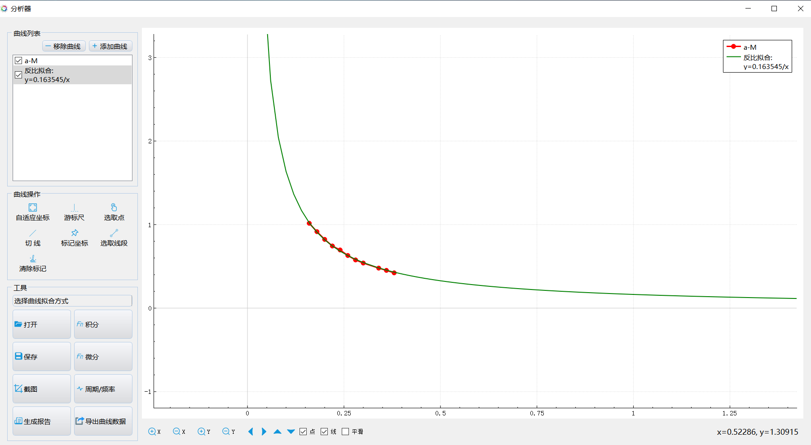
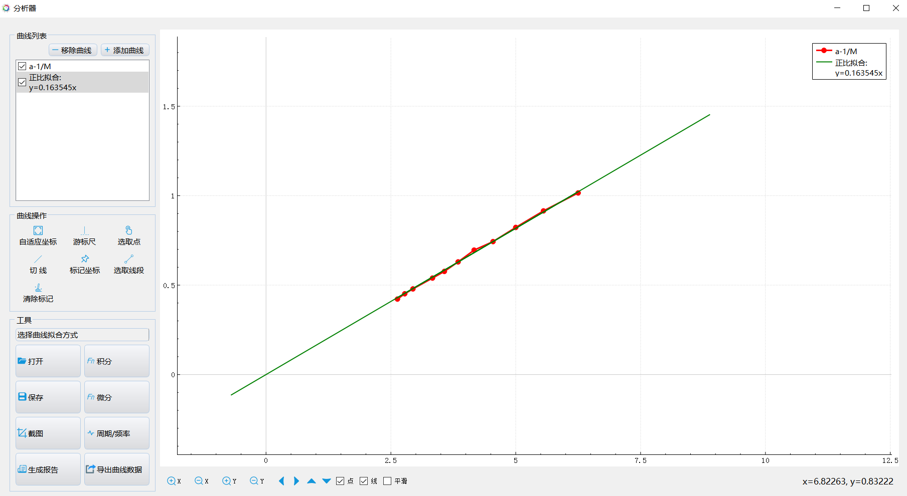

实验十九 牛顿第二定律
【实验目的】
探究加速度和物体质量的关系。
【实验原理】
通过分析可知，可能影响物体运动的加速度的因素有两个：物体受到的合外力和物体本身的质量。为了验证这两个因素到底如何对物体运动的加速度施加影响，我们可以采用变量控制法进行研究，分别找出两个量和加速度之间的关系。
本实验中，我们先保持物体的质量不变，改变物体受到的合外力，找出合外力和加速度的关系；然后保持物体受到的合外力不变，改变物体的质量，找出物体质量和加速度的关系。实验中使用的力学导轨和小车之间的摩擦力极小，可以垫高导轨让小车产生一个与摩擦力相反的力，以抵消摩擦力，这样更方便我们进行研究。
【实验器材】
数据采集器、2个光电门传感器、力学导轨和计算机等。
【实验装置】

【实验操作步骤】
1.搭建好实验环境，选择4毫米的挡光片安装在小车上；利用支架将光电门固定在导轨上，调整2个光电门之间的距离及光电门的高度，确保挡光片可以顺利的通过并触发光电门计数。
2.用细绳一端系在小车上，另一端绕过滚轮，下挂一个合适的砝码；
3.打开实验数据分析软件，连接好数据采集器和光电门传感器；
4.打开“表格视图”，点击“添加变量”以“递增的方式”添加“M”数据列，“初始值”设为小车的质量，“系数”设置为配重片的质量；点击“添加公式”添加“a”数据列，分别表示小车的质量和小车的加速度；
5.将小车移到导轨的一端释放，使其在小桶的牵引下经过两个光电门，光电门测出小车经过时的速度，软件自动计算出其余各列的值；
6.逐次往小车上加入1块配重片，重复多次实验；
7.点击“数据分析”，做出物体质量和加速度的关系曲线，并进行曲线反比拟合；

加速度与质量关系曲线

加速度与质量倒数的关系曲线
【思考与讨论】
1.试根据实验中得到的“a-m曲线”判断当合外力不变时物体的加速度和质量之间的关系，并想办法证明你的看法；
2.根据实验的结果，归纳出能反映物体的加速度和物体的质量以及合外力的关系的表达式。
【自由探究】
本实验中采用的小车和轨道之间的摩擦力极小，为了方便研究，我们在实验过程中忽略了此摩擦力。如果实验中使用的小车和轨道之间的摩擦力较大，不能忽略，你有办法利用这样的实验器材，用同样的方法寻找加速度和物体的质量、合外力之间的关系吗？想一想，试一试。